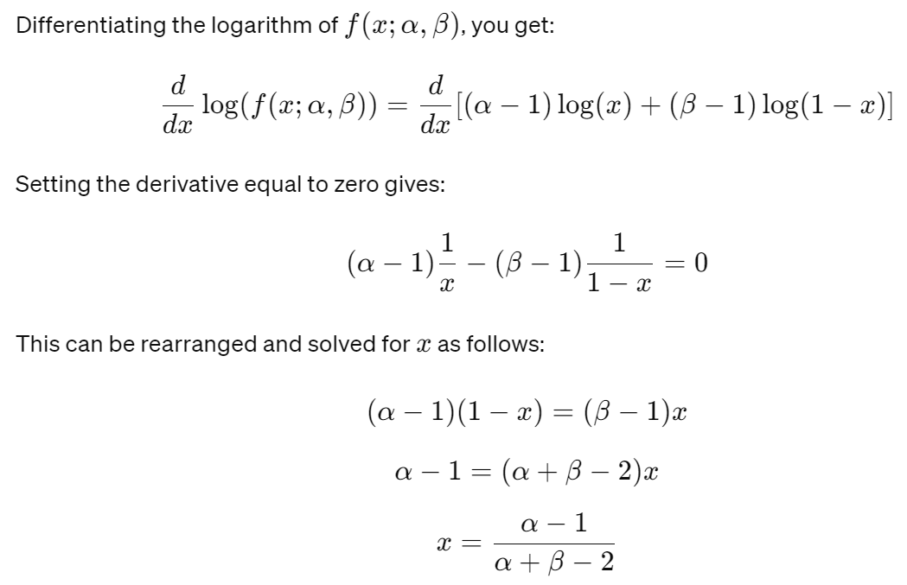

Êú∫Âô®Â≠¶‰π†Âú®Êï∞ÊçÆÂàÜÊûê‰∏äÁöÑÂÆûÈôÖÂ∫îÁ
约 1395 个字 1 张图片 预计阅读时间 5 分钟
Data Analysis¶
Data¶
- data modalities: number, image, video, audio, text, graph, point cloud, etc.
- data cleaning
- data augmentation 增强
-
feature extraction/feature engineering
-
domain expertise
-
math tricks
- kernel methods
- principal component analysis
- neural network
- normalization/standardization
- imbalanced data
- data splitting
Attributes¶
Nomial
Ordinal序数
Interval
Ratio 比率
Algorithm / Model¶
discriminative vs. generative supervised vs. unsupervised classification vs. regression linear vs. nonlinear
Evaluation¶
Testing Metrics¶
-
accuracy, recall, precision, receiver, operator curve
-
Truth/Prediction True False True True Positive False Negative False False Negative True Negative
- mean squared error
Training Metrics¶
- mean squared error, cross entropy loss
- mean squared error
Probability & Statistics¶
Pobability¶
| Probability | Statistics |
|---|---|
| Events | Population |
| Trial | Sample |
| Numerical characteristics of random variables | Numerical characteristics |
| Asymptotic theory | Statistical inference |
Distributions¶
Bernoulli distribution ‰ºØÂä™Âà©ÂàÜÂ∏ɶ
-
Binary Outcomes: It has only two possible outcomes. For example, flipping a coin results in either heads or tails.
-
Parameters: The distribution is characterized by a single parameter p, which is the probability of success (where 0≤p≤1).
-
Random Variable: A random variable X that follows a Bernoulli distribution takes the value 1 with probability p(success) and the value 0 with probability 1−p(failure).
-
Mean and Variance:
- Mean (Expected Value): E(X)=p
- Variance: Var(X)=p(1−p)
-
Usage: This distribution is used to model scenarios with two outcomes, such as pass/fail, yes/no, win/lose, etc. It's a fundamental building block for more complex distributions like the Binomial distribution, which models the number of successes in a fixed number of independent Bernoulli trials.
-
Probability Mass Function (PMF): The PMF of a Bernoulli distributed random variable
Binomial distribution ‰∫åÈ°πÂàÜÂ∏ɶ
-
Trials: The distribution is defined by the number of trials, n, which is a fixed number.
-
Success Probability: The probability of success on an individual trial, p.
-
Random Variable: A random variable X following a Binomial distribution represents the number of successes in n trials.
-
Mean and Variance: - Mean (Expected Value): E(X)=np* - Variance: Var(X)=np(1−p)
-
Probability Mass Function (PMF): The probability of getting exactly k successes in n trials is given by:
- Usage: The Binomial distribution is used widely in statistics, particularly for modeling the number of successes in various scenarios such as flipping a coin, quality control processes, survey responses, and other fields where the outcomes are binary and trials are independent.
Normal distribution/Gaussian distribution Ê≠£ÊÄÅÂàÜÂ∏ɶ
Key Features
-
Shape: The Normal distribution is bell-shaped and symmetric about its mean.
-
Mean (μ): This is the central location of the distribution and is also the median and mode.
-
Standard Deviation (σ): This measures the dispersion or variability around the mean; 68% of the data falls within one σ standard deviation of the mean, 95% within two σ, and 99.7% within three σ, a property known as the empirical rule or 68-95-99.7 rule.
-
Formula: The probability density function (PDF) of the Normal distribution for a random variable X is given by:
1 | |
- Applications: The Normal distribution is used for various applications including:
- Statistical inference
- Prediction intervals
- Process control
- Natural phenomena (e.g., measurement errors, heights of people)
- Central Limit Theorem: This fundamental theorem in statistics states that the sum (or average) of a large number of independent, identically distributed variables with finite means and variances will approximately follow a Normal distribution, regardless of the underlying distribution.
Properties
- Skewness 偏度: The Normal distribution has a skewness of zero, indicating a perfectly symmetrical shape.
- Kurtosis 峰度: It has a kurtosis of 3, which is the baseline for comparing the peakedness of other distributions (mesokurtic中峰度).
Uniform distribution ÂùáÂåÄÂàÜÂ∏ɶ
均匀分布是另一种简单但有用的概率分布。 它模拟了一个场景，其中所有结果在一定范围内发生的可能性相同。 该分布是在两个参数 a 和 b 之间定义的，它们分别是最小值和最大值。
-
Continuous: Unlike the Bernoulli or Binomial distributions, the Uniform distribution is continuous.
-
Range: The outcomes are uniformly distributed over the interval [a,b].
-
Probability Density Function (PDF): The PDF of the Uniform distribution is given by:
This indicates that every point in the interval [a,b] has the same probability density.
-
Mean and Variance:
-
Mean (Expected Value): \((a+b)/2\)
-
Variance: $$ \frac{(b-a)^2}{12} $$
Poisson distribution Ê≥äÊùæÂàÜÂ∏ɶ
泊松分布是一种概率分布，它对固定时间或空间间隔内发生的事件数量进行建模，前提是这些事件以已知的恒定平均速率发生，并且与自上次事件以来的时间无关。
-
Parameter λ: The average number of events per interval, λ (lambda), is the rate at which events happen. It's the only parameter of this distribution.
-
Discrete Distribution: The Poisson distribution is used for discrete events (e.g., counting the number of emails received in an hour).
-
Probability Mass Function (PMF): The PMF of a Poisson distributed random variable X indicating the probability of observing exactly k events is given by:
for k=0,1,2,…, where e is the base of the natural logarithm.
- Mean and Variance:
- Mean: λ
- Variance: λ
- Applications
The Poisson distribution is widely used in various fields such as:
- Telecommunications (e.g., number of phone calls per minute)
- Traffic engineering (e.g., cars passing a point)
- Biology (e.g., mutations in a strand of DNA)
- Queueing theory
Beta distribution¶
beta 分布是在区间 [0, 1] 上定义的一系列连续概率分布，由两个正形状参数（用 α 和 β 表示）进行参数化。 它在统计、贝叶斯分析和机器学习等领域特别有用。
1.Support: The distribution is defined for values on the interval [0, 1].
2.Shape Parameters: α and β control the shape of the distribution:
-
If α=β=1, the beta distribution is uniform.
-
If α>1 and β=1 (or vice versa), the distribution is skewed towards 1 (or 0).
-
If α=β>1, the distribution is symmetric and bell-shaped around 0.5.
-
If α<1 and β<1, the distribution is U-shaped.
3.Mean: The mean of the beta distribution is \(\frac{\alpha}{\alpha+\beta}\).
4.Variance: The variance is \(\frac{α+β}{(α+β)^2(α+β+1)}\)​.
5.Probability Density Function (PDF):
Where:
- x is the variable over the interval [0, 1].
- α and β are shape parameters.
- B(α,β) is the beta function, serving as a normalization factor.
Example¶
​ In Bayesian data analysis, if the prior distribution for a parameter 0 is Beta(2, 2), and after observing data, the posterior distribution is Beta(5, 3), what is the maximum a posteriori (MAP) estimate for 0?

​ Given a posterior distribution Beta(5, 3), let's plug in the values α=5 and β=3 into the formula to calculate the MAP estimate. The maximum a posteriori (MAP) estimate for the parameter x is approximately 0.67.
Statistics¶
-
The concept of population and sample
-
Statistics
- sample mean
- sample variance
- Statistical inference
- Frequentist view \(P(D;θ)\)​
- Point estimation
- Methods
- maximum likelihood estimation(MLE)
- method of moments
- Evaluation of methods
- consistency
- unbiasedness
- minimum-variance
Bayesian Theorem¶
Bayesian view \(P(D|θ)\)
-
realtions between events
-
subsetting(inclusion) and equality
- mutuak exclusion and negation
- Addition Law of Probability
- Total Probability
-
operations on events
-
addition(union)
- multiplication(intersection)
- subtraction(difference)
-
Conditional probability
-
independence among events
- Multiplication law of Probability
Bayesian equation $$ P(\theta|D)=\frac{P(D|\theta)P(\theta)}{P(D)}\ \ posterior=\frac{likelihood*prior}{evidence} $$
Bayesian inference
- Maximum A Posterior(MAP)
- Minimum Mean Squared Error
https://chat.openai.com/share/80223f00-4ab2-41d5-8691-db83547f1ff9
Null hypothesis testing¶
假设检验
the null hypothesis is denoted by \(H_0\)​
Type 1 error, Type 2 error:
https://chat.openai.com/share/0cd19f6f-30c4-47c1-8506-70572dfead58
Unsupervised Learning¶
Clustering
K-means
anomly
symbols to meaning
SVD(single value decomposition)
PCA(Principal components analysis): use only the top k columns of U and V
latent semantic analysis
Supervised learning¶
Classification¶
https://chatgpt.com/share/1d5a433a-f924-4e02-b700-e9aaecb9cbdf
评论区~
有用的话请给我个赞和 star =>